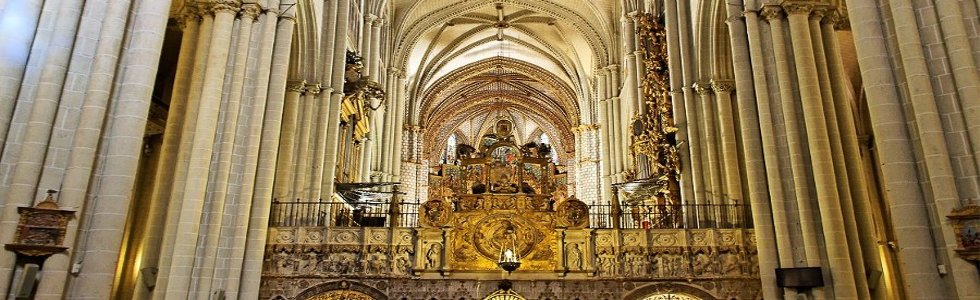
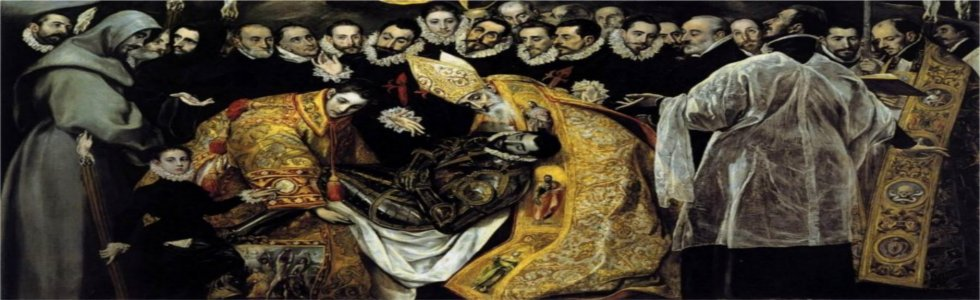
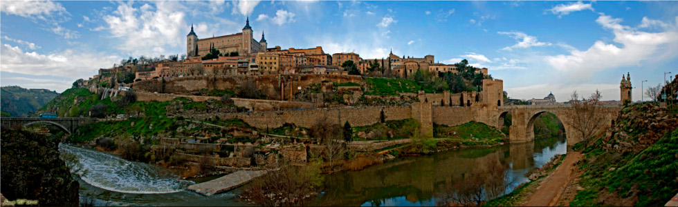
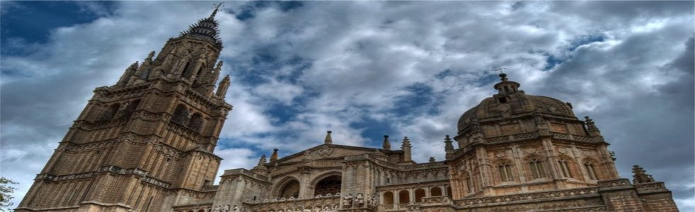
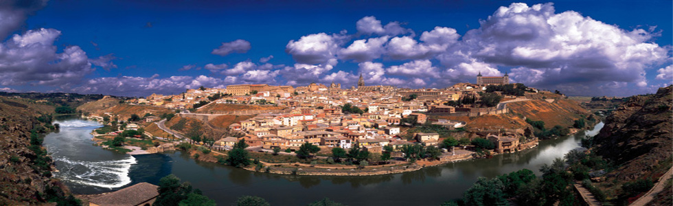
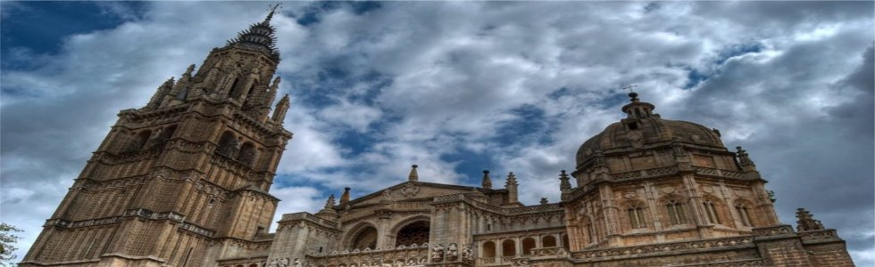
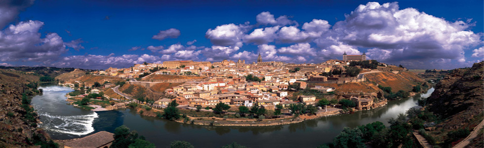
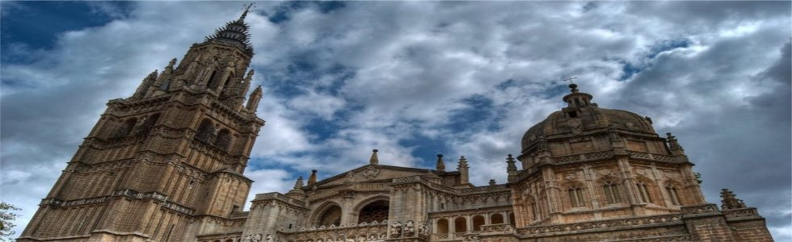
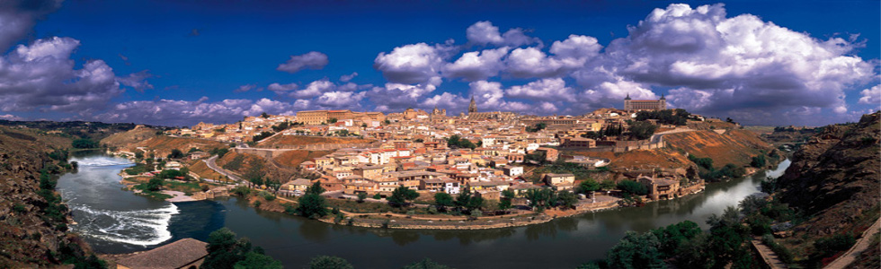

Toledo... Donde la piedra es joya
La ciudad fue tomada por el romano Marco Fulbio Nobilior, que construyó Toletum sobre estas ruinas carpetanas.
Desde el siglo V, los pueblos bárbaros invaden el Imperio Romano en distintas ocasiones. Los alanos ocuparon Toledo en el 411.
En el año 569, Atanagildo instala su Corte en Toledo y con el rey Leovigildo pasa a ser capital del reino hispano-godo.



 




